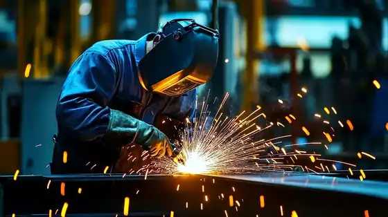
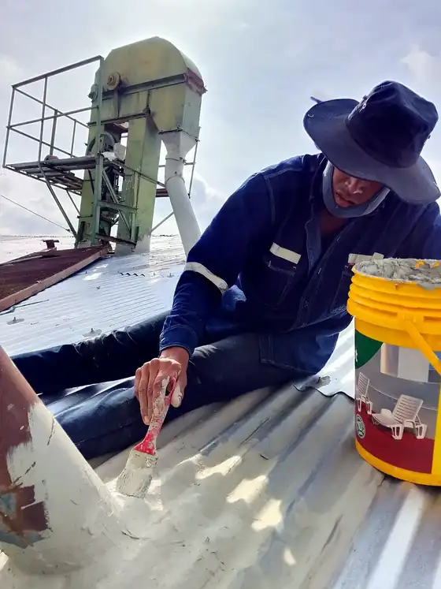
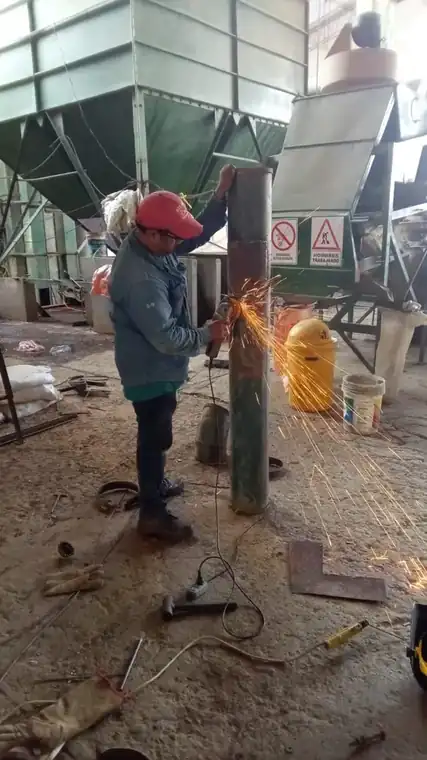
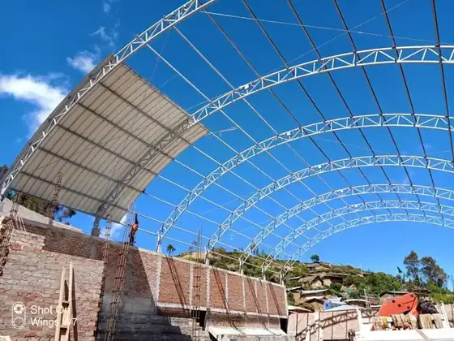
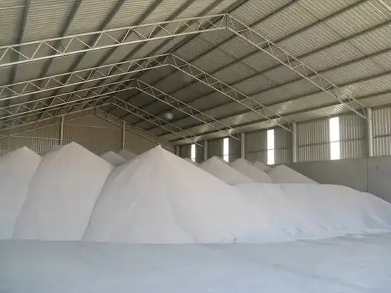

Galpones industriales
Fabricación y montaje de estructuras para almacenamiento y producción.
Fabricación, montaje y adecuación de estructuras metálicas e infraestructura industrial, con soldadura, impermeabilización y pintura.

Fabricación y montaje de estructuras para almacenamiento y producción.
Rejas metálicas resistentes para el manejo de ganado.
Uniones y reparaciones metálicas, en taller y en campo.
Sellado y protección de cubiertas y techos industriales.
Pintura industrial, de estructuras y de obras.








Cuéntanos tu requerimiento y preparamos tu cotización.